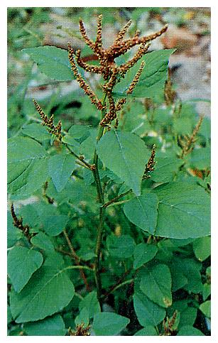
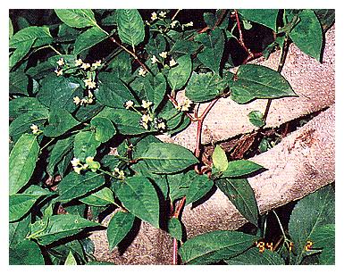
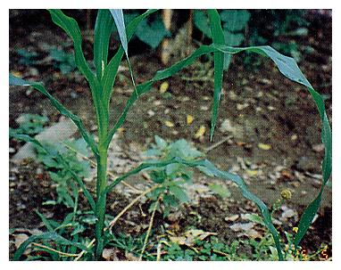

| 編號 | 照片 | 名稱 | |
| 01 | 俗名 | 紫莖牛膝 | |
| 學名 | Achyranthes asperavar. rubrofusca. | ||
| 科屬 | 莧科 Amaranthaceae | ||
| 介紹 | 多年生草本植物，莖方形，分枝對生，節處呈紅褐色，被有疏毛，節部膨大，綠而帶紫色，節部暗紫色，葉對生有柄橢圓形，兩端均銳全緣，夏季開綠色小花，穗狀花序，苞片三角形，具尾尖，瘦果圓筒形，嫩莖葉可食。 | ||
| 編號 | 照片 | 名稱 | |
| 02 |  | 俗名 | 野莧、豬莧、綠莧、山行菜、鳥杏 |
| 學名 | Amaranthus viridis L. | ||
| 科屬 | 莧科 Amaranthaceae | ||
| 介紹 | 一年生草本，莖直立，全株光滑無毛，無刺，少分枝。葉互生，菱形長卵形或卵形長橢圓形，葉具長柄，葉緣波狀。夏季開花，穗狀花序，腋生或頂生，黃綠色，小花花被3片，每一小花有膜質苞片保護，每一苞片先端呈毛刺狀，囊果扁球形。 野莧之幼苗嫩莖葉，花穗及囊果均可食，且味佳。也可作為豬飼料。嫩葉似菜心，將外皮去除，切片鹽拌，香脆可口。 | ||
| 編號 | 照片 | 名稱 | |
| 03 |  |
俗名 | 麵包樹、麵包果樹 |
| 學名 | Artocarpus altilis(Park.) Fosberg | ||
| 科屬 | 桑科 Moraceae | ||
| 介紹 | 常綠大喬木，樹高達10m以上，全株含白色汁液，葉大形、互生、革質，廣卵形長30～90cm，葉片全緣或呈掌狀3～9裂，葉柄粗，花30～50cm，托葉大形、早落。雌雄同株，雄花小形，花被2枚，雄蕊1枚，密生於棍棒狀之花序軸上，雌花花被筒狀集生於球狀花序軸上。多花果球形或卵形，徑達20公分左右，表面有瘤棘，成熟時黃色。花期3～5月，果期6～8月。 葉可做插花之花材，種子、果肉皆可食，嚼之味如麵包故名，果實上每一個小的突出點是由一朵朵小花變成的，這種由多花形成的果實稱為聚合果或多花果，鳳梨也是多花果。 | ||
| 編號 | 照片 | 名稱 | |
| 04 |  |
俗名 | 楊桃、羊桃 |
| 學名 | Averrhoa carambola | ||
| 科屬 | 楊桃科 Averrhoaceae | ||
| 介紹 | 常綠小喬木，樹高5～10m，葉互生，奇數羽狀複葉，小葉5～11對，全緣，對生，卵形。葉腋間生聚繖花序，紫紅小花，花瓣五枚。漿果長橢圓形，具五個縱稜，每年五月以後至第二年三月成熟。 楊桃果實分酸甜兩類，酸果可製罐頭，榨汁；甜果種於果實成熟變黃後即可直接食用。葉片搗碎後可外敷腫毒，有去膿生肌之效，根可治中毒，樹皮可治粟粒疹，果實可去風熱，有生津解渴之效。 | ||
| 編號 | 照片 | 名稱 | |
| 05 |  |
俗名 | 木苧麻、密花苧麻、山水柳、蝦公鬚 |
| 學名 | Boehmeria densifloraHok.et Arn | ||
| 科屬 | 蕁麻科 Urticaceae | ||
| 介紹 | 常綠灌木，分枝多，全株被有細毛，葉對生或近於對生，卵狀披針形，先端銳尖，基部稍鈍，葉形大小變異大，葉緣有細鋸齒，主脈三條，側脈三對，托葉披針形。 雌雄異株，穗狀花序、腋出。花期春至夏，果期4～11月，瘦果、扁球形、有毛，成熟時由綠轉暗紅色。 樹皮可剝取纖維製作繩索，嫩葉可食，用鹽醃拌可有較佳味道，炒食較佳。 | ||
| 編號 | 照片 | 名稱 | |
| 06 |  |
俗名 | 食用雙囊蕨、過溝菜蕨、過山貓 |
| 學名 | Diplazium esculentum Sw. | ||
| 科屬 | 水龍骨科 Polypodiaceae | ||
| 介紹 | 根莖稍木本狀，葉叢生，葉柄強健，長可達20cm，葉片長70cm，高可達50cm，一或二回羽狀複葉、質軟、平滑、銳尖頭，邊緣有細鋸齒，子囊群沿側脈著生，褐色。 自生於水溝邊半陰涼處，其卷曲之嫩葉炒食味道佳。 | ||
| 編號 | 照片 | 名稱 | |
| 07 |  |
俗名 | 昭和草、饑荒草 |
| 學名 | Erechtites hieracifolia (L.)Raf. | ||
| 科屬 | 菊科 Compositae | ||
| 介紹 | 一年生草本，高約50～100cm，莖柔軟有縱紋，綠色或略帶淡紫色，被粗毛。葉對生披針形至長橢圓形，尖頭，不規則短齒緣，具長柄，頭狀花排列成繖房狀，腋出或頂生，花由5～8朵白色舌狀花和中央黃色的管狀花所構成。瘦果褐色具四稜，頂端長有2～3條宿存萼，萼上有刺，碰到人畜就會沾在人畜身上，這是它傳播的方法。 昭和草之嫩莖葉洗淨炒食味道尚佳，老莖葉洗淨煮清水可治高血壓、頭痛、便秘，莖葉洗淨搗爛外敷可治腫毒水腫。 | ||
| 編號 | 照片 | 名稱 | |
| 08 |  |
俗名 | 稜果榕 |
| 學名 | Ficus septica Burm. f. | ||
| 科屬 | 桑科 Moraceae | ||
| 介紹 | 常綠喬木，高可達15m，徑30～40cm，樹皮粗糙，灰白色。葉單生，互生，常叢生於小枝的先端，卵形，卵狀長橢圓形至長橢圓形，長15～25cm，寬10～15cm，先端銳尖，基部鈍或略呈楔形，革質或厚紙質，全緣，表面粗糙而有光擇，背面光滑顏色較淡；中肋於表面凹下而於背面隆起，側脈每邊6～7枚；葉柄長4～6cm，粗壯，光滑無毛。花小，單性，著生於隱頭花序之內，雄花花萼二裂，雄蕊二枚，花絲短，雌花花萼二裂，子房卵形，光滑。 根、葉及果實可入藥，具解毒化濕之功效。根可用於治風濕性關節炎，止痢消炎。葉治便秘，皮膚炎，咽喉炎，果實治便秘。 | ||
| 編號 | 照片 | 名稱 | |
| 09 |  |
俗名 | 黃槿 |
| 學名 | Hibiscus tiliaceus Linn. | ||
| 科屬 | 錦葵科 Malvaceae | ||
| 介紹 | 常綠中喬木，高可達15公尺或更高，樹幹平滑樹皮灰色，纖維質嫩莖葉及花序都具短柔毛，老熟後逐漸光滑無毛，葉單葉互生，葉柄長，葉圓形或心形，長8～12cm，寬7～10cm，先端銳尖至突短尾狀基部深心形，革質或近似革質，全緣或有不明顯鋸齒，表面有短星狀毛，背面密佈有短絨毛，表面綠色有光澤，背面淡綠帶有白粉狀。花單生，花冠初開時鮮黃色花心暗紫，花瓣5片，卵圓形，蒴果球形，外被短毛，5月至10月開花，嫩芽及花可食。 | ||
| 編號 | 照片 | 名稱 | |
| 10 | 俗名 | 酒瓶椰子 | |
| 學名 | Hyophorbe amaricaulis Mart. | ||
| 科屬 | 棕櫚科 Palmae | ||
| 介紹 | 單幹直立高僅2～3m，基部膨大如酒瓶狀，故名「酒瓶椰子」灰褐色的莖部有明顯的環紋，綠色之葉鞘緊包於莖頂，葉鞘長約為羽狀葉之1/3，羽狀葉，葉柄堅硬，葉長1～1.5m，小葉40～60對，長約40～50公分，葉色黃綠。雌雄同株，花小，單性花，雄花在分枝末梢，雌花開在分枝基部，肉穗狀花序，果實橢圓球形，內有一粒種子。原產於非洲東部之馬達加斯加，模里西斯等之熱帶地方，本省全島均有栽種，以南部生長較佳。 | ||
| 編號 | 照片 | 名稱 | |
| 11 | 俗名 | 女貞、小實女貞 | |
| 學名 | Ligustrum microcarpumKanehira & Sasaki | ||
| 科屬 | 木犀科 Oleaceae | ||
| 介紹 | 常綠灌木或小喬木，老樹幹褐色無毛，嫩枝草綠色有細毛，葉薄革質，主脈明顯，向葉背面凸起，側脈4～5對，不明顯，葉柄長約0.5公分，葉對生，長橢圓形或卵形，先端稍鈍，圓錐花序頂生長約6cm，被毛，花萼杯狀4齒列，花冠4深裂，白色，小蕊2枚。果實球形，徑約0.3cm，成熟時由嫩轉黑，春夏開花，秋天結果，播種繁殖。 | ||
| 編號 | 照片 | 名稱 | |
| 12 | 俗名 | 南天竹 | |
| 學名 | Nandina domestica Thunb | ||
| 科屬 | 小檗科 Berbeidaceae | ||
| 介紹 | 常綠灌木，三出羽狀複葉，小葉革質，葉形似橄欖，基部及先端尖細，中間膨起，主脈突起，幼枝綠色，老枝紫色，另有紫色條紋，葉形小巧可愛，葉子在冬天轉為紅色，甚為雅緻，圓錐花序頂生，花白色、細小，花瓣通常3片，雄蕊6枚，漿果熟時轉紅，繁殖用播種、阡插或分株，春天為適期。 | ||
| 編號 | 照片 | 名稱 | |
| 13 |  | 俗名 | 火炭母草、冷飯藤 |
| 學名 | Polygonum Cninensis L. | ||
| 科屬 | 南洋杉科 Araucariaceae | ||
| 介紹 | 常綠大喬木，樹皮常片狀剝落，側枝輪生，小枝由側枝向兩側生長，葉鑿形或三稜形，硬而尖銳會刺人，螺旋狀排列於小枝上，毬果寬卵形，種子藏於果鱗內，每一鱗片內含一種子。繁殖多用種子繁殖，如以側枝、插條繁殖之苗不能直立，除供觀賞外，樹幹可做建材。 | ||
| 編號 | 照片 | 名稱 | |
| 14 |  |
俗名 | 羽葉福祿桐 |
| 學名 | Polyscias fruticosa(L.) Harms. | ||
| 科屬 | 五加科 Araliaceae | ||
| 介紹 | 常綠小灌木，2—3回羽狀複葉，小葉披針形，長達10公分，葉緣缺刻，花小形，繖形花序頂生。葉子小巧玲瓏，樹姿優雅，俗稱「發財樹」，耐蔭性強，以扦插繁殖成活率高。 | ||
| 編號 | 照片 | 名稱 | |
| 15 |  |
俗名 | 水黃皮 |
| 學名 | Pongamia pinnata(Linn) Pierre ex Merr. | ||
| 科屬 | 蝶形花科 Papilimaceae | ||
| 介紹 | 半落葉中喬木，樹高可達20m以上，樹皮灰褐色或黑褐色，小枝光滑，平滑粗壯。葉奇數一回羽狀複葉，長30～60cm，葉柄長5～8cm，光滑綠色，小葉5～7枚對生，橢圓形或卵形至長橢圓形，長6～10cm，寬3～5cm，先端尖銳，基部鈍或略呈圓形厚，有光澤，全緣或呈波狀緣。花多數腋生，密總狀花序，淡紫紅色，花萼鐘形，雄蕊單體，花葯長橢圓形，子房近似無柄，有胚珠2枚，花柱細長，莢果木質鐮刀狀膨大，種子圓形或腎形，繁殖以種子繁殖，庭園觀賞用。 | ||
| 編號 | 照片 | 名稱 | |
| 16 |  |
俗名 | 冇骨消、蒴翟、陸英 |
| 學名 | Sambucus formosana Nakai | ||
| 科屬 | 忍冬科 Caprifoliaceaee | ||
| 介紹 | 多年生常綠亞灌木，莖直立且多分歧，高1～3m，葉對生奇數羽狀複葉，長15～30cm，小葉3～5，膜質披針形，先端銳尖基部鈍，長6～15公分，側脈8～10對，葉柄長2～3cm，葉緣有細鋸齒。春至夏季開花，複繖房花序頂生，稍有毛，小梗長3～4mm，花萼5微裂，花冠五裂，雄蕊5，花柱3裂，果實球形，熟時紅色。 冇骨消之根、莖、葉皆可入藥，根具消腫散瘀，袪風舒經活絡，消炎解毒之效。莖葉有利尿解熱，消腫活血止痛的功用，根主治骨折疼痛，跌打內外傷，扭傷腫痛，癰毒腫瘤，風濕骨痛，神經炎，皮膚炎，腰痛，葉及莖主治肺炎，淋病，腎炎水腫。 | ||
| 編號 | 照片 | 名稱 | |
| 17 | 俗名 | 龍葵、水茄、苦葵 | |
| 學名 | Solanum nigrum L. | ||
| 科屬 | 茄科 Solanaceae | ||
| 介紹 | 一年生或二年生草本，莖直立多分枝，莖稍有稜，平滑或毛疏生。葉互生有柄，膜質闊卵形，全緣或波狀，微鋸齒緣，尖頭，圓或楔基，葉面無毛。總狀花序側生，花萼五裂，花冠白色輻射狀，雄蕊5枚，雌蕊1枚，柱頭圓形，花萼被細毛，漿果球形，黑色，種子扁圓。 嫩莖葉及果實煮熟可食，生鮮植株及未熟果實有毒，中毒時瞳孔放大，頭暈，噁心，口乾舌燥，失去知覺及語言能力，痙攣及呼吸系統麻痺，腹部抽筋嘔吐，腹瀉，漿果成熟無毒，可生食。全草具清熱利尿解毒消腫之效，治疔瘡，慢性氣管炎，腎炎，抗癌。 | ||
| 編號 | 照片 | 名稱 | |
| 18 | 俗名 | 欖仁 | |
| 學名 | Terminalia catappa L. | ||
| 科屬 | 使君子科 Combretaceae | ||
| 介紹 | 落葉喬木，枝條水平生長，葉叢生枝端，葉大形，長20～25cm，寬約10cm，橢圓形或吉他形，花著生在腋生的穗狀花序上，黃綠色，不顯著；核果為兩面體的橄欖形，熟時黃色，種子扁桃形，種皮富纖維質。 欖仁樹春天剛萌芽之嫩葉及秋天將要落葉時之紅葉，讓它別具風味，成為受歡迎的庭園木，欖仁樹自然落下之老葉煎汁可治肝病。 | ||
| 編號 | 照片 | 名稱 | |
| 19 |  | 俗名 | 玉米、玉蜀黍、包穀 |
| 學名 | Zea mays | ||
| 科屬 | 禾本科 Gramineae | ||
| 介紹 | 一年生草本，葉狹長濃綠色，平行脈。單性花，雄花為頂生圓錐花序，雌花為腋生穗狀花序，包在許多苞片內，雌雄同株，雌花柱頭絲狀露出在苞片外，受粉後雌花序發育成長圓形果穗，外被苞葉，絲狀柱頭留在果穗頂端。 玉米種子富含澱粉可食用與釀酒，玉米雌蕊之絲狀柱頭頭及花柱加水煎煮至半量，一日分三次服用，可治急性腎炎的浮腫症狀，亦可治妊娠浮腫，黃膽肝炎，糖尿病，高血壓，膽結石。 | ||
| 編號 | 照片 | 名稱 | |
| 20 | 俗名 | 櫸木、雞油 | |
| 學名 | Zelkova serrata(Thunb.) Makino | ||
| 科屬 | 榆科 Ulmaceae | ||
| 介紹 | 落葉大喬木，葉紙質長卵形，前端漸尖，表面粗糙葉緣有很規則的鋸齒，木材鮮紅赭色，硬重強韌，為闊葉樹材中之上品，供地板、傢俱、樓梯把手、登山杖等用，市價甚高。 | ||